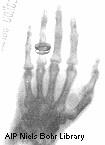

X-rays are high-frequency, and thus high-energy, electromagnetic radiation.
They have wavelengths ranging from 0.01 to 10 nanometres, and thus frequencies from 3×1019 to 3×1016 Hz. They are found to reside between ultraviolet radiation and gamma rays on the electromagnetic spectrum.

Astrophysical sources of X-rays include plasmas with temperatures of 1 to 100 million degrees Celcius, such as the solar corona, supernova remnants and gas in galaxy clusters. In addition to this blackbody radiation from hot gas, high-energy events involving charged particles moving at high speeds within a magnetic field can also generate X-rays. Examples include the aurora of Jupiter, compact galactic objects like neutron stars, cataclysmic variable stars and X-ray binaries, and active galactic nuclei and quasars.
X-rays are commonly regarded to have first been discovered in the laboratory in 1895 when Wilhelm Röntgen conducted experiments with a partially evacuated tube enclosed in thick cardboard. He passed electricity through the tube, and whenever he did this, he noticed that a chemical coated screen on the other side of his laboratory would glow. Within a week he had created an X-ray image of his wife’s hand, showing the bones and her wedding ring. Röntgen dubbed this new form of radiation “X” rays, to denote its mysterious nature, and the name stuck.

Credit: AIP Emilio Segré Visual Archives
Although in 1901 Röntgen received the Nobel prize in physics for his discovery, others had been experimenting with X-rays before him. In 1892 Heinrich Hertz and his student Philipp Lenard were generating X-rays (although they probably did not know it) from cathode ray tubes, and investigating their penetrating ability through different materials. In the preceding year, at Stanford University, Fernando Sanford had created and detected X-rays, as detailed in his Jan 6, 1893, Physical Review Letter. Prior to this, there is evidence to suggest that Nikola Tesla, from 1887 onwards, had worked with X-rays, and before him, from 1881 onwards, the Ukrainian-born Ivan Pulyui had already pioneered the invention and use of X-rays.